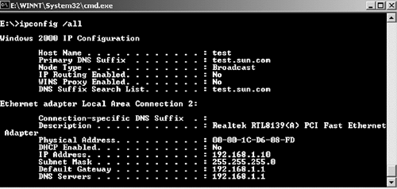
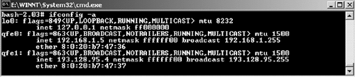
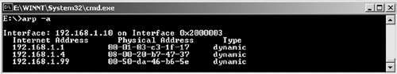
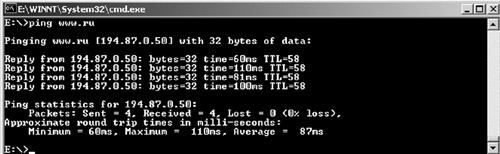
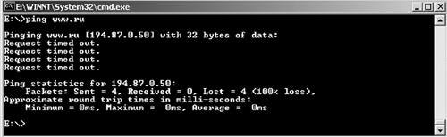
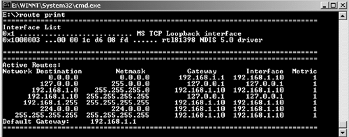
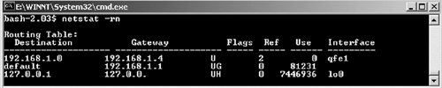
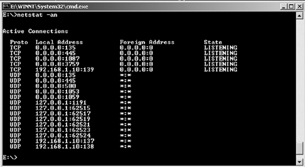
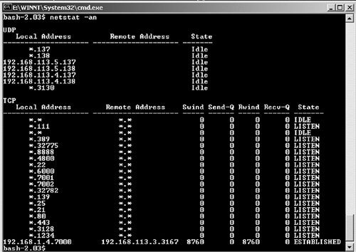

Утилиты для работы с сетью
Рассмотрим основные программы, позволяющие читать и изменять сетевые
параметры, диагностировать и выявлять ошибки при работе сети.
В различных ОС существуют свои наборы утилит. Сравним их для двух систем,
например, Microsoft Windows NT и Sun Solaris. Какими бы разными ни были
эти ОС, в каждой из них реализована модель OSI. Естественно, программная и
аппаратная реализация стека этой модели у них различается, но
взаимодействие всех уровней осуществляется по установленному стандарту.
IPCONFIG (IFCONFIG)
Начнем с утилиты, которая позволяет просматривать, проверять и изменять
сетевые настройки. Обычно эти настройки включают в себя информацию 3-го
(сетевого) уровня – IP-адрес, маску подсети и т.д. Для работы с ними в ОС
Windows можно использовать команду ipconfig. Она выдает информацию об IP-
адресе, маске подсети (netmask), роутере по умолчанию (default gateway).
Задав дополнительный параметр -all, можно получить более подробную
информацию – имя компьютера, имя домена, тип
сетевой карты,
MAC-адрес и т.д.

Рис.
В ОС Solaris для получения IP-адреса и прочих сетевых настроек
используется команда ifconfig. Она также показывает название интерфейса,
IP-адреса, маску подсети, MAC-адрес.

Рис.
ARP
Как уже было сказано ранее, в оперативной памяти компьютера находится
ARP-таблица. В ней содержатся MAC-адрес удаленной машины и
соответствующий ему IP-адрес. Для просмотра этой таблицы используется
команда arp. Например, arp –a выводит все известные MAC-
адреса.

Рис.
Существует два типа записей в ARP-таблице – статический и динамический.
Статическая запись вносится вручную и существует до тех пор, пока
вручную же не будет удалена, или компьютер (маршрутизатор) не будет
перезагружен.
Динамическая запись появляется при попытке отправить сообщение на IP-
адрес, для которого неизвестен MAC-адрес. В этом случае формируется
ARP-запрос, который позволяет этот адрес определить, после чего
соответствующая динамическая запись добавляется в ARP-таблицу.
Храниться там она будет не постоянно. После определенного времени она
будет автоматически удалена, если к данному IP-адресу не было обращений.
Задержка на получение MAC-адреса составляет порядка нескольких
миллисекунд, так что для пользователя это будет практически незаметно,
зато появляется возможность отследить изменения в конфигурации сети (в
соответствии IP- и MAC-адресов).
Ping
Для выявления различных неполадок в сети существует несколько утилит,
которые позволяют определить, на каком уровне модели OSI произошел
сбой, или указаны неверные настройки сетевых протоколов. Одна из таких
утилит – ping.
Эта утилита позволяет определить ошибки на сетевом уровне (layer 3),
используя протокол ICMP (Internet Control Message Protocol) – протокол
межсетевых управляющих сообщений. Формат использования этой утилиты
довольно прост: ping 194.87.0.50 (где
194.87.0.50 – IP-адрес удаленного
компьютера). Если сеть работает корректно, в результате выводится время
ожидания прихода ответа от удаленного компьютера и время жизни пакета
(TTL, time to live, количество "хопов", после которого пакет был бы
отброшен; этот параметр показывает, сколько оставалось допустимых
переходов у пакета-ответа).

Рис.
Протокол ICMP находится на стыке двух уровней – сетевого и
транспортного. Основной принцип действия этого протокола – формирование
ICMP эхо-запроса (echo-request) и эхо-ответа (echo-reply). Запрос эха
и ответ на него может использоваться для проверки достижимости хоста-
получателя и его способности отвечать на запросы. Также прохождение
эхо-запроса и эхо-ответа проверяет работоспособность основной части
транспортной системы, маршрутизацию на машине источника,
работоспособность и корректную маршрутизацию на роутерах между
источником и получателем, а также работоспособность и правильность
маршрутизации получателя.
Таким образом, если на посланный echo-request возвращается корректный
echo-reply от машины, которой был послан запрос, можно сказать, что
транспортная система работает корректно. И если браузер не может
отобразить web-страницу, то проблема, по всей видимости, не в первых
трех уровнях модели OSI.
Из примера видно, что по умолчанию размер посылаемого пакета - 32
байта, далее выводится время задержки ответа и TTL. В этом примере
показано успешное выполнение команды ping. В случаях, когда запросы
echo request посылаются, но echo reply не возвращаются, выводится
сообщение об истечении времени ожидания ответа.

Рис.
Traceroute
Утилита traceroute также использует протокол ICMP для
определения маршрута прохождения пакета. При отсылке traceroute
устанавливает значение TTL последовательно от 1 до
30. Каждый маршрутизатор, через который проходит пакет
на пути к назначенному хосту, увеличивает значение TTL на единицу.
С помощью TTL происходит предотвращение зацикливание пакета в "петлях"
маршрутизации, иначе "заблудившиеся" пакеты окончательно перегрузили
бы сеть. Однако, при выходе маршрутизатора или линии связи из строя
требуется несколько дополнительных переходов для понимания, что данный
маршрут потерян и его необходимо обойти. Чтобы предотвратить потерю
датаграммы, поле TTL устанавливается на максимальную величину.
Когда маршрутизатор получает IP-датаграмму с TTL, равным 0 или 1, он
уничтожает ее и посылает хосту, который ее отправил, ICMP-сообщение
"время истекло" (time exceeded). Принцип работы traceroute заключается
в том, что IP-датаграмма, содержащая это ICMP-сообщение, имеет в
качестве адреса источника IP-адрес маршрутизатора.
Теперь легко понять, как работает traceroute. На хост
назначения отправляется IP- датаграмма с TTL, равным единице. Первый
маршрутизатор, который должен обработать датаграмму, уничтожает ее
(так как TTL равно 1) и отправляет ICMP-сообщение об истечении времени
(time exceeded). Таким образом определяется первый маршрутизатор в
маршруте. Затем traceroute отправляет датаграмму с TTL,
равным 2, что позволяет получить IP-адрес
второго маршрутизатора. Так продолжается до тех пор, пока датаграмма не
достигнет хоста назначения. Утилита traceroute может
посылать в качестве такой датаграммы UDP-сообщение с номером порта,
который заведомо не будет обработан приложением (порт выше
30000), поэтому хост назначения ответит "порт недоступен"
(port unreachable). При получении такого ответа делается вывод, что
удаленный хост работает корректно. В противном случае максимального
значения TTL (по умолчанию 30) не хватило для того, чтобы
его достигнуть.
Рассмотрим пример выполнения утилиты traceroute.
Первая строка содержит имя и IP-адрес хоста назначения, максимальное
значение TTL и размер посылаемого пакета (38 байт). Последующие строки
начинаются с TTL, после чего следует имя хоста, или маршрутизатора и
его IP-адрес. Для каждого значения TTL отправляются три датаграммы.
Для каждой возвращенной датаграммы определяется и выводится время
возврата. Если в течение 3-х секунд на каждую из 3-х датаграмм не был
получен ответ, то посылается следующая датаграмма, а вместо значения
времени выводится звездочка. Время возврата – это время прохождения
датаграммы от источника (хоста, выполняющего программу
traceroute) до маршрутизатора. Если нас интересует время,
потраченное на пересылку между, например, 5 и 6 узлом, необходимо
вычесть из значения времени TTL 6 время TTL 5.
В каждой из операционных систем сетевая часть утилиты реализована
практически одинаково, но реализация на уровне приложений различается.
В ОС Solaris используется утилита traceroute. В качестве
параметра задается IP-адрес, или доменное имя удаленного хоста, связь
до которого требуется проверить. В примере, приведенном выше, видно
успешное выполнение traceroute и корректную работу сете-
зависимых уровней (физический, канальный, сетевой).
В ОС Windows утилита называется tracert. Используется она
так же, как и в ОС Solaris (tracert netserv1.chg.ru).
Принципиального различия между утилитами tracert и
traceroute нет. Особенностью traceroute
является наличие большего количества функций (например, можно указать,
начиная с какого TTL выводить информацию).
В случае какой-либо неполадки выводится соответствующее сообщение.
Например, при недоступности сети на маршрутизаторе выдается сообщение
!N (net unreachable):
Moscow-BNS045-ATM4-0-3.free.net (147.45.20.37)
947.327 ms !N 996.548 ms !N 995.257 ms
Это означает, что 147.45.20.37 – маршрутизатор, начиная с
которого, последующий маршрут недоступен. Если недоступен сам хост, то
сообщение будет выглядеть так:
msu-mipt-atm0.mipt.ru (212.16.1.1)
5.536 ms !H 5.993 ms !H 10.431 ms !H.
Ошибка !P означает недоступность протокола (protocol
unreachable).
Route
Для просмотра и редактирования таблицы маршрутов используется утилита
route. Типичный пример таблицы маршрутизации на
персональном компьютере:
Для ОС Windows:

Рис.
В таблице маршрутизации указывается сеть, маска сети, маршрутизатор,
через который доступна эта сеть, интерфейс и метрика маршрута. Из
приведенной таблицы видно, что маршрут по умолчанию доступен через
маршрутизатор 192.168.1.1. Сеть 192.168.1.0 с
маской 255.255.255.0 является локальной сетью.
При добавлении маршрута можно использовать следующую команду.
route ADD 157.0.0.0 MASK 255.0.0.0 157.55.80.1
157.0.0.0 – удаленная сеть, 255.0.0.0 –
маска удаленной сети, 157.55.80.1 – маршрутизатор, через
который доступна эта сеть. Примерно такой же синтаксис используется
при удалении маршрута: route DELETE 157.0.0.0.
В ОС Solaris для просмотра таблицы маршрутизации используется немного
другая команда – netstat –r.

Рис.
Добавление и удаление маршрутов выполняется командой
route: route add –net 157.6 157.6.1.20, где
157.6 – сокращенный адрес подсети, а
157.6.1.20 – маршрут, по которому эта сеть доступна.
Также удаление маршрутов в таблице маршрутизации:
route del –net 157.6.
Netstat
Утилита netstat позволяет определить, какие порты открыты
и по каким портам происходит передача данных между узлами сети.
Например, если запустить web-браузер и открыть для просмотра
web-страницу, то, запустив netstat, можно увидеть
следующую строку:
TCP mycomp:3687 www.ru:http ESTABLISHED
В проведенном примере первое значение – TCP – тип протокола (может
быть TCP или UDP), далее следует имя локальной машины и локальный
порт, www.ru:http – имя удаленного хоста и порта, к
которому производится обращение (поскольку использовался порт по
умолчанию для протокола HTTP, то отображается не его числовое значение
80, а имя протокола), ESTABLISHED – показывает, что
TCP-соединение установлено.

Рис.
В ОС Windows с помощью команды netstat –an можно
получить список всех открытых портов (параметр –n не
определяет DNS-имя, а выводит только IP-адрес). Из примера выше видно,
что установленных соединений нет, а все открытые порты находятся в
состоянии "прослушивания", т.е. к этому порту можно обратиться для
установки соединения. TCP-порт 139 отвечает за установку
Netbios-сессий (например, для передачи данных через "сетевое
окружение").

Рис.
В ОС Solaris для получения информации об используемых портах также
применяется утилита netstat. Формат вывода практически одинаков.
|